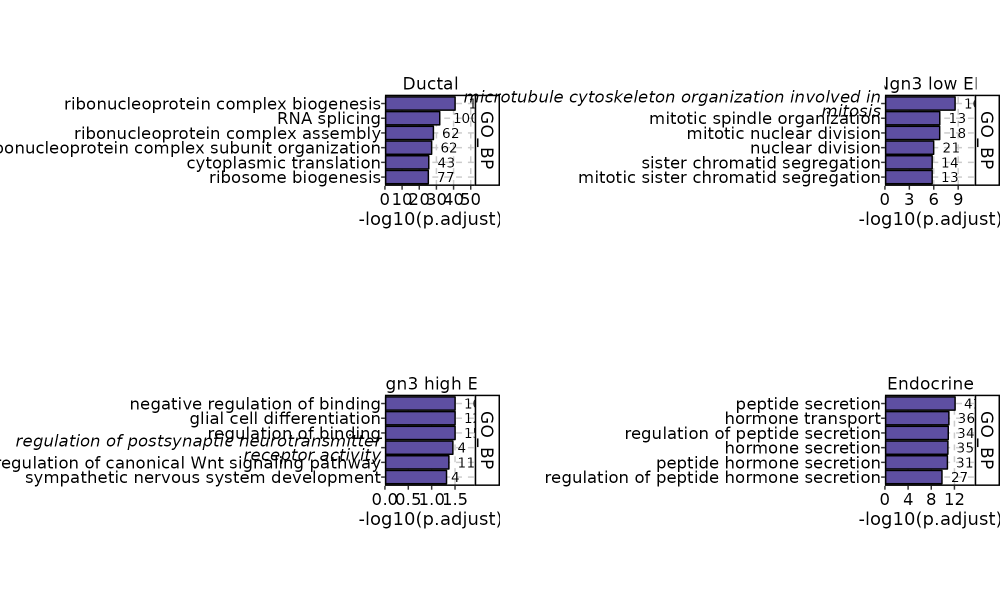
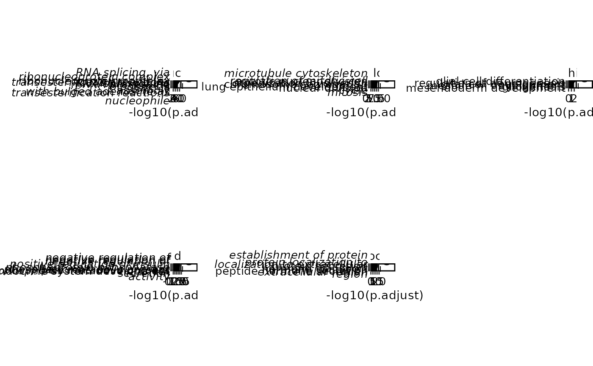
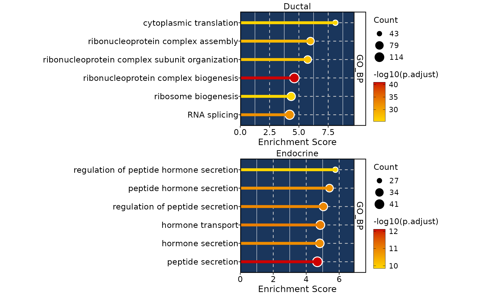
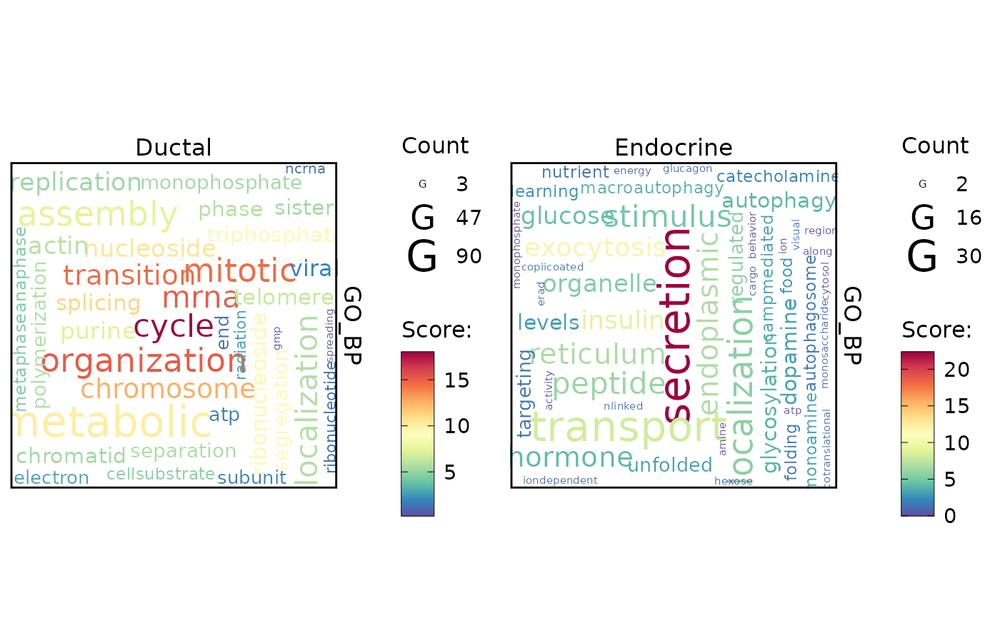

EnrichmentPlot
EnrichmentPlot.RdEnrichmentPlot
Usage
EnrichmentPlot(
x,
enrichment = "GO_BP",
plot_type = "bar",
topTerm = 6,
topGene = 100,
text_size_scale = 1,
character_width = 50,
line_height = 0.7,
panel_fix = FALSE,
panel_height_scale = 0.25 * text_size_scale,
panel_width = 2.5,
pvalueCutoff = NULL,
padjustCutoff = 0.05,
palette = "Spectral",
combine = TRUE,
nrow = NULL,
ncol = NULL,
byrow = TRUE,
align = "hv",
axis = "lr"
)Arguments
- x
A enrichemnt result generated by the RunEnrichment function.
- plot_type
Type of plot to be visualized.
- topTerm
Number of terms to plot if
plot_type="bar"orplot_type="lollipop".- topGene
Number of genes to plot if
plot_type="wordcloud".- pvalueCutoff
pvalueCutoff
- padjustCutoff
padjustCutoff
- palette
palette
- combine
combine
- nrow
nrow
- ncol
ncol
- byrow
byrow
- Enrichment
Enrichment column name in
x.- Groups
Groups column name in
x.
Examples
# \donttest{
data("pancreas1k")
library(dplyr)
pancreas1k <- RunDEtest(pancreas1k, group_by = "CellType")
#> [2022-06-10 16:11:48] Start DEtest
#> Threads used for DE test: 124
#> Perform FindAllMarkers(wilcox)...
#>
|
| | 0%
|
|============ | 20%
|
|======================== | 40%
|
|==================================== | 60%
|
|================================================ | 80%
|
|============================================================| 100%
#>
#> [2022-06-10 16:12:02] DEtest done
#> Elapsed time: 13.74 secs
de_filter <- filter(pancreas1k@tools$DEtest_CellType$AllMarkers_wilcox, p_val_adj < 0.01 & avg_log2FC > 1)
res <- RunEnrichment(geneID = de_filter$gene, geneID_groups = de_filter$group1, enrichment = "GO_BP", species = "Mus_musculus")
#> [2022-06-10 16:12:02] Start Enrichment
#> Species: Mus_musculus
#> Loaded cached db: GO_BP version:3.13.0 nterm:16027 created:2022-05-10 13:07:34
#> Loading required package: AnnotationDbi
#> Loading required package: stats4
#> Loading required package: IRanges
#> Loading required package: S4Vectors
#>
#> Attaching package: ‘S4Vectors’
#> The following objects are masked from ‘package:dplyr’:
#>
#> first, rename
#> The following objects are masked from ‘package:base’:
#>
#> I, expand.grid, unname
#>
#> Attaching package: ‘IRanges’
#> The following objects are masked from ‘package:dplyr’:
#>
#> collapse, desc, slice
#>
#> Attaching package: ‘AnnotationDbi’
#> The following object is masked from ‘package:dplyr’:
#>
#> select
#> Permform enrichment...
#>
|
| | 0%
|
|============ | 20%
#>
#>
|
|======================== | 40%
#>
#>
|
|==================================== | 60%
#>
#>
|
|================================================ | 80%
#>
#>
|
|============================================================| 100%
#>
#>
#> Loading required package: DOSE
#> DOSE v3.18.3 For help: https://guangchuangyu.github.io/software/DOSE
#>
#> If you use DOSE in published research, please cite:
#> Guangchuang Yu, Li-Gen Wang, Guang-Rong Yan, Qing-Yu He. DOSE: an R/Bioconductor package for Disease Ontology Semantic and Enrichment analysis. Bioinformatics 2015, 31(4):608-609
#> [2022-06-10 16:12:32] Enrichment done
#> Elapsed time: 30.12 secs
EnrichmentPlot(res$enrichment, plot_type = "bar")

EnrichmentPlot(res$enrichment, plot_type = "bar", character_width = 30, text_size_scale = 0.8)

EnrichmentPlot(filter(res$enrichment, Groups %in% c("Ductal", "Endocrine")), plot_type = "lollipop", ncol = 1)

EnrichmentPlot(filter(res$enrichment, Groups %in% c("Ductal", "Endocrine")), plot_type = "wordcloud")
#> Some words could not fit on page. They have been removed.
#> Some words could not fit on page. They have been removed.

# }